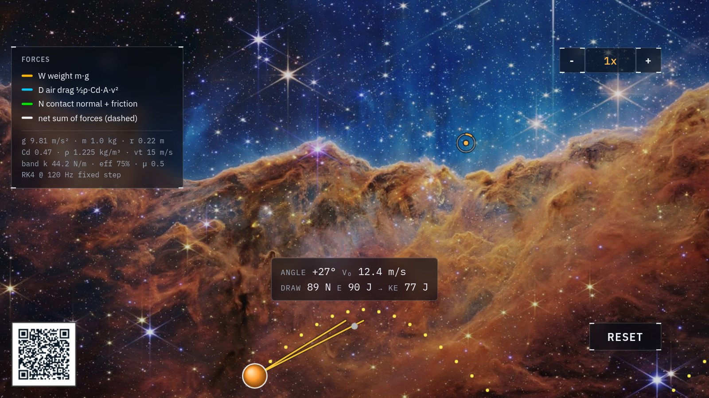

Mechanics · forces & energy
Slingshot
Pull back and let go. Between your fingers and the floor, three forces do all the work, and the display draws every one of them, to scale, while the ball flies.

At the display
- Pinch the ball and pull. The further you stretch, the more energy the band stores. Watch the joules climb in the readout.
- Let go. Stored energy becomes speed. The dotted arc showed the plan; now watch how closely the real flight follows it.
- Read the arrows riding the flying ball. Yellow is weight pulling down, blue is air drag pushing back, and the dashed white one is their sum, the only thing the ball actually feels.
What's really happening
A slingshot is an energy converter. Stretching the band stores elastic energy, the way winding stores energy in a spring; release turns it into kinetic energy, the energy of motion. The readout does the bookkeeping honestly. Some energy never makes it into the ball, because real bands waste a little as heat, which is why the launch number comes out slightly smaller than the draw number.
In flight, only two forces remain. Gravity pulls with the same strength the whole time. Air drag is sneakier: it grows with the square of the speed, so a ball going twice as fast fights four times the drag. That is why the flight path is not the perfect textbook parabola. It leans over, steeper on the way down than on the way up.
There is no simple formula for a flight with air drag. Not because physicists have been lazy, but because none exists. The display does what real simulations do: it recomputes all the forces and nudges the ball forward, 120 times every second.